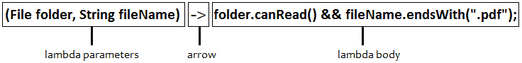
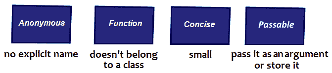

您可能知道，Java 不像 Haskell 那样是一种纯粹的函数式编程语言，但从版本 8 开始，Java 添加了一些函数式支持。添加这种支持的努力是成功的，函数式代码被开发人员和公司广泛采用。函数式编程支持更易于理解、维护和测试的代码。然而，以函数式风格编写 Java 代码需要认真了解 lambdas、流 API、可选和函数接口等。所有这些函数式编程主题也可以是访谈主题，在本章中，我们将介绍一些热门问题，这些问题是通过常规 Java 访谈必须知道的。我们的议程包括以下主题：
让我们开始吧！
与往常一样，本部分旨在强调和更新本主题的主要概念，并为回答技术面试中可能出现的基本问题提供全面的资源。
因此，函数式编程的关键概念包括：
让我们简要介绍一下这些概念。
说函数是一级对象意味着我们可以创建一个函数的实例，因为它有一个引用该函数实例的变量。这类似于引用字符串、列表或任何其他对象。此外，函数可以作为参数传递给其他函数。但是，Java 方法不是一流的对象。我们所能做的最好的事情就是依赖 Java lambda 表达式。
纯函数是一个执行无副作用的函数，返回值仅取决于其输入参数。以下 Java 方法是纯函数：
public class Calculator {
public int sum(int x, int y) {
return x + y;
}
}
如果一个方法使用成员变量或改变成员变量的状态，那么它不是一个纯函数。
高阶函数将一个或多个函数作为参数和/或返回另一个函数作为结果。Java 通过 lambda 表达式模拟高阶函数。换句话说，在 Java 中，高阶函数是获取一个（或多个）lambda 表达式作为参数和/或返回另一个 lambda 表达式的方法。
例如，以比较器为参数的Collections.sort（）方法是一个高阶函数：
Collections.sort(list, (String x, String y) -> {
return x.compareTo(y);
});
Collections.sort（）的第一个参数是列表，第二个参数是 lambda表达式。这个 lambda 表达式参数使Collections.sort（）成为一个高阶函数。
现在，让我们简要地讨论一下纯函数式编程规则。纯函数式编程也有一套规则要遵循。详情如下:
让我们简要介绍一下这些规则。
通过无状态，我们并不意味着函数式编程消除状态。通常，无状态意味着函数没有外部状态。换句话说，函数可以在内部使用包含临时状态的局部变量，但不能引用它所属的类/对象的任何成员变量。
通过无副作用，我们应该理解函数不能改变（变异）函数之外的任何状态（在其功能范围之外）。函数外部的状态包括以下内容：
函数式编程鼓励并支持使用不可变变量。依靠不可变变量可以帮助我们更容易、更直观地避免副作用。
由于递归依赖于重复的函数调用来模拟循环，因此代码的功能更加强大。这意味着函数式编程不鼓励使用以下迭代方法计算阶乘：
static long factorial(long n) {
long result = 1;
for (; n > 0; n--) {
result *= n;
}
return result;
}
函数式编程鼓励以下递归方法：
static long factorial(long n) {
return n == 1 ? 1 : n * factorial(n - 1);
}
我们使用尾部递归来提高性能损失，因为在前面的示例中，每个函数调用都保存为递归堆栈中的一个帧。当有许多递归调用时，首选尾部递归。在尾部递归中，函数执行递归调用是最后一件事，因此编译器不需要将函数调用保存为递归堆栈中的帧。大多数编译器将优化尾部递归，从而避免性能损失：
static long factorialTail(long n) {
return factorial(1, n);
}
static long factorial(long acc, long v) {
return v == 1 ? acc : factorial(acc * v, v - 1);
}
或者，可以通过 Java Stream API 实现循环，该 API 受功能启发：
static long factorial(long n) {
return LongStream.rangeClosed(1, n)
.reduce(1, (n1, n2) -> n1 * n2);
}
现在，是时候练习一些问题和编码挑战了。
在本节中，我们将讨论 21 个在访谈中非常流行的问题和编码挑战。开始吧！
问题：描述 Java 中lambda 表达式的部分。此外，lambda 表达式的特征是什么？
解决方案：如下图所示，lambda 有三个主要部分：

图 17.1–Lambda 零件
lambda 表达式的各部分如下所示：
接下来，让我们讨论 lambda 表达式的特征。因此，如果我们从前面的图中编写 lambda 的匿名类版本，那么它将如下所示：
FilenameFilter filter = new FilenameFilter() {
@Override
public boolean accept(File folder, String fileName) {
return folder.canRead() && fileName.endsWith(".pdf");
}
};
现在，如果我们比较匿名版本和 lambda 表达式，那么我们注意到 lambda 表达式是一个简洁的匿名函数，可以作为参数传递给方法，也可以保存在变量中。
下图中所示的四个单词表示 lambda 表达式：

图 17.2–λ特性
根据经验，请记住 lambdas 支持行为参数化设计模式（行为作为函数的参数传递），并且只能在函数接口的上下文中使用。
解决方案：在 Java 中，函数接口是只包含一个抽象方法的接口。换句话说，函数接口只包含一个未实现的方法。因此，函数接口将函数包装为接口，函数由接口上的单个抽象方法表示。
除此抽象方法外，函数接口还可以具有默认和/或静态方法。功能接口通常用@FunctionInterface注释。这只是一种用于标记函数接口的信息性注释类型。
以下是功能接口的示例：
@FunctionalInterface
public interface Callable<V> {
V call() throws Exception;
}
根据经验，如果一个接口有更多没有实现的方法（即抽象方法），那么它就不再是功能接口。这意味着这样的接口不能由 Java lambda 表达式实现。
问题：集合和流的主要区别是什么？
解决方案：map（）函数是名为映射的中间操作，可通过流API 获取。它用于通过简单地应用给定函数将一种类型的对象转换为另一种类型。因此，map（）通过应用给定函数并将结果累积到新的流中，遍历给定流并将每个元素转换为新版本的元素。给定的流未修改。例如，通过流映射（）将列表<字符串>转换为列表<整数>可以如下操作：
List<String> strList = Arrays.asList("1", "2", "3");
List<Integer> intList = strList.stream()
.map(Integer::parseInt)
.collect(Collectors.toList());
挑战自己，练习更多的例子。尝试应用map（）将一个数组转换为另一个数组。
问题：flatMap（）函数的功能是什么？您为什么要使用它？
解决方案：flatMap（）函数是名为展平的中间操作，可通过流API 获取。此函数是map（）的扩展，意味着除了将给定对象转换为另一种类型的对象外，还可以将其展平。例如，有一个列表<列表<对象>>，我们可以通过流【平面图】将其转化为列表<对象>，如下所示：
List<List<Object>> list = ... List<Object> flatList = list.stream() .flatMap(List::stream) .collect(Collectors.toList());
下一个编码 To.T0.挑战与 T1 T1 相关，所以也要考虑这一点。
解决方案：这两个函数都是中间操作，能够通过应用给定函数将给定类型的对象转换为另一类型的对象。此外，flatMap（）函数还可以展平给定对象。换句话说，flatMap（）也可以展平流对象。
为什么这很重要？嗯，map（）知道如何在流中包装元素序列，对吗？这意味着，map（）可以生成流<字符串[]>、流<列表<字符串>>、流<集<>>甚至【T12 流【T30 流】<等流>>。但问题是这些类型的流无法通过sum（）、distinct（）和filter（）等流操作成功操作（即，正如我们预期的）。
例如，让我们考虑下面的清单 T0。
List<List<String>> melonLists = Arrays.asList(
Arrays.asList("Gac", "Cantaloupe"),
Arrays.asList("Hemi", "Gac", "Apollo"),
Arrays.asList("Gac", "Hemi", "Cantaloupe"));
我们试图从这个列表中获得不同的瓜名。如果可以通过Arrays.stream（）将数组包装成流，那么对于集合，我们有collection.stream（）。因此，第一次尝试可能如下所示：
melonLists.stream() .map(Collection::stream) // Stream<Stream<String>> .distinct();
但这不起作用，因为map（）将返回流<流<字符串>>。flatMap（）提供的解决方案如下：
List<String> distinctNames = melonLists.stream() .flatMap(Collection::stream) // Stream<String> .distinct() .collect(Collectors.toList());
此外，如果您发现理解这些函数式编程方法有困难，那么我强烈建议您阅读我的另一本书Java 编码问题，可从 Packt（上获得 https://www.packtpub.com/programming/java-coding-problems ）。这本书包含两个关于 Java 函数式编程的综合章节，提供了详细的解释、图表和应用程序，有助于深入研究这个主题。
解决方案：filter（）函数是通过流API 提供的名为filter的中间操作。用于过滤流中满足一定条件的元素。该条件通过java.util.function.Predicate函数指定。这个谓词函数只不过是一个函数，它接受一个对象作为参数，并返回一个布尔值。
假设我们有以下整数列表：
List<Integer> ints = Arrays.asList(1, 2, -4, 0, 2, 0, -1, 14, 0, -1);
流式传输此列表并仅提取非零元素可以按如下方式完成：
List<Integer> result = ints.stream() .filter(i -> i != 0) .collect(Collectors.toList());
结果列表将包含以下元素：1、2、-4、2、-1、14、-1。
注意，对于几个常见的操作，Java流API 已经提供了现成的中间操作。例如，对于以下操作，不需要使用过滤器（）和定义谓词：
所有这些函数都内置在流API 中。
问题：中间操作和终端操作的主要区别是什么？
解决方案：中间操作返回另一个流，而终端操作产生的结果不是流（例如，集合或标量值）。换句话说，中间操作允许我们在名为管道的查询类型中链接/调用多个操作。
在调用终端操作之前，不会执行中间操作。这意味着中间操作是惰性的。主要是在实际需要某些给定处理的结果时执行。终端操作触发流的遍历，执行管道。
在中间操作中，我们有map（）、flatMap（）、filter（）、limit（）和skip（）。在终端操作中，我们有sum（）、min（）、max（）、count（）和collect（）。
解决方案：peek（）函数是通过流API 提供的名为peek的中间操作。它可以让我们透过流管道看到。主要是，peek（）应该对当前元件执行某种非干扰动作，并将元件转发到管道中的下一个操作。通常，此操作包括在控制台上打印有意义的消息。换句话说，peek（）对于调试与流和 lambda 表达式处理相关的问题是一个很好的选择。例如，假设我们有以下地址列表：
addresses.stream()
.peek(p -> System.out.println("\tstream(): " + p))
.filter(s -> s.startsWith("c"))
.sorted()
.peek(p -> System.out.println("\tsorted(): " + p))
.collect(Collectors.toList());
值得一提的是，即使可以使用peek（）来改变状态（修改流的数据源），它也代表外观，但不要触摸。在平行流管道的情况下，通过peek（）的变异状态可能会成为一个真正的问题，因为上游操作可以在任何时间和任何线程调用变异操作。因此，如果操作修改了共享状态，它将负责提供所需的同步。
根据经验，在使用peek（）变异状态之前，请三思。另外，请注意，这种做法是开发人员争论的焦点，可以归类为不良做法，甚至是反模式保护伞。
解决方案：说流是惰性的意思是流定义了一个中间操作的管道，只有当管道遇到终端操作时才执行。此问题与本章编码挑战 8相关。
问题：功能接口和常规接口的主要区别是什么？
解决方案：功能接口与常规接口的主要区别在于，一个常规接口可以包含任意数量的抽象方法，而一个功能接口只能有一个抽象方法。
您可以参考本书的编码挑战 2以获得更深入的理解。
解决方案：供应商和消费者是两个内置的功能接口。供应商充当工厂方法或新关键字。换句话说，供应商定义了一个名为get（）的方法，该方法不接受参数并返回一个类型为t的对象。因此，一个供应商对提供一些价值是有用的。
另一方面，消费者定义了一个名为无效接受（T T）的方法。此方法接受单个参数并返回void。使用者接口使用给定值并对其应用一些操作。与其他功能接口不同，消费者可能会导致副作用。例如，消费者可以用作 setter 方法。
问题：什么是谓词？
解决方案：谓词是一个内置功能接口，包含一个抽象方法，其签名为布尔测试（T 对象）：
@FunctionalInterface
public interface Predicate<T> {
boolean test(T t);
// default and static methods omitted for brevity
}
test（）方法测试一个条件，如果满足该条件，则返回true，否则返回false。谓词的一个常见用法是与流<T>过滤器（谓词<？超级 T>谓词）方法结合使用，用于过滤流中不需要的元素。
问题：findFirst（）和findAny（）之间的主要区别是什么？
解决方案：findFirst（）方法从流中返回第一个元素，特别适用于从序列中获取第一个元素。只要流具有定义的顺序，它就返回流中的第一个元素。如果没有遭遇顺序，则findFirst（）返回流中的任何元素。
另一方面，findAny（）方法返回流中的任何元素。换句话说，它从流中返回任意（非确定性）元素。findAny（）方法忽略遇到的顺序，并且在非并行操作中，它很可能返回第一个元素，但这无法保证。为了最大限度地提高性能，在并行操作中无法可靠地确定结果。
注意，根据流的源和中间操作，流可能有也可能没有定义的遭遇顺序。
解决方案：将一组对象转换成流至少可以通过三种方式完成，如下所示：
public static <T> Stream<T> toStream(T[] arr) {return Arrays.stream(arr);
}
public static <T> Stream<T> toStream(T[] arr) { return Stream.of(arr);
}的流
public static <T> Stream<T> toStream(T[] arr) {
return Arrays.asList(arr).stream();
}
将基元数组（例如，整数）转换为流至少可以通过两种方式完成，如下所示：
public static IntStream toStream(int[] arr) { return Arrays.stream(arr);
}
public static IntStream toStream(int[] arr) {
return IntStream.of(arr);
}
当然，对于Long，您可以使用LongStream，对于 Double，您可以使用DoubleStream。
解决方案：并行流是可以使用多个线程并行执行的流。例如，您可能需要过滤 1000 万个整数的流，以查找小于某个值的整数。您可以使用并行流，而不是使用单个线程顺序遍历流。这意味着多个线程将在流的不同部分同时搜索这些整数，然后合并结果。
解决方案：简而言之，方法引用是 lambda 表达式的快捷方式。主要来说，方法引用是一种用于按名称而不是通过描述如何调用方法来调用方法的技术。主要的好处是可读性。方法引用是通过将目标引用放在分隔符：之前来编写的，并且在其之后提供方法的名称。我们有以下参考资料：
解决方案：Java 8 中增加了默认方法，主要是为了提供对接口的支持，使其能够超越抽象契约（即仅包含抽象方法）而发展。对于编写库并希望以兼容方式发展 API 的人来说，此功能非常有用。通过默认方法，可以在不中断现有实现的情况下丰富接口。
默认方法直接在接口中实现，由default关键字识别。例如，下面的接口定义了一个名为area（）的抽象方法和一个名为Permission（）的默认方法：
public interface Polygon {
public double area();
default double perimeter(double... segments) {
return Arrays.stream(segments)
.sum();
}
}
由于多边形具有单一抽象方法，因此它也是一个功能接口。因此，可以用@functionanterface注释。
解决方案：集合API 创建了迭代器，而流API 创建了拆分器。
通过分析它们的名称，我们注意到拆分器=拆分表迭代器。因此，拆分器可以拆分给定的源，也可以对其进行迭代。并行处理需要拆分。换句话说，迭代器可以顺序迭代集合中的元素，而拆分器可以并行或顺序迭代流中的元素。
迭代器只能通过hasNext（）/next（）遍历集合的元素，因为它没有大小。另一方面，拆分器可以通过estimateSize（）或getExactSizeIfKnown（）精确地近似提供集合的大小。
拆分器可以使用多个标志在内部禁用不必要的操作（例如，并发、不同、不可变）。迭代器没有这样的标志。
最后，您可以围绕迭代器创建拆分器，如下所示：
Spliterators.spliteratorUnknownSize( your_Iterator, your_Properties);
在Java 编码问题（一书中 https://www.amazon.com/gp/product/B07Y9BPV4W/ ），您可以找到有关此主题的更多详细信息，包括编写自定义拆分器的完整指南。
解决方案：受 Haskell 和 Scala 的启发，在 Java 8 中引入了可选类，主要目的是缓解/避免NullPointerException。Java 语言架构师 Brian Goetz 的定义如下：
Optional 旨在为库方法返回类型提供一种有限的机制，在这种情况下，需要有一种明确的方式来表示无结果，并且使用 null 表示这样的结果极有可能导致错误。
简而言之，您可以将可选视为包含值或为空的单值容器。例如，空的可选如下所示：
Optional<User> userOptional = Optional.empty();
非空的可选如下所示：
User user = new User(); Optional<User> userOptional = Optional.of(user);
在Java 编码问题（中 https://www.amazon.com/gp/product/B07Y9BPV4W/ ），您可以找到一个完整的章节，专门介绍使用可选的最佳实践。这是任何 Java 开发人员都必须阅读的一章。
解决方案：字符串：：的值是对字符串类的静态方法的值的方法引用。考虑阅读 Ty9 T9 编码挑战 17 Ty10T10 以及关于这方面的更多信息。
在本章中，我们讨论了几个有关 Java 函数式编程的热门话题。虽然这个主题相当广泛，有很多专门的书籍，但这里所涉及的问题应该足以通过一次定期的 Java 访谈，该访谈涵盖 Java 8 语言的主要功能。
在下一章中，我们将讨论与缩放相关的问题。